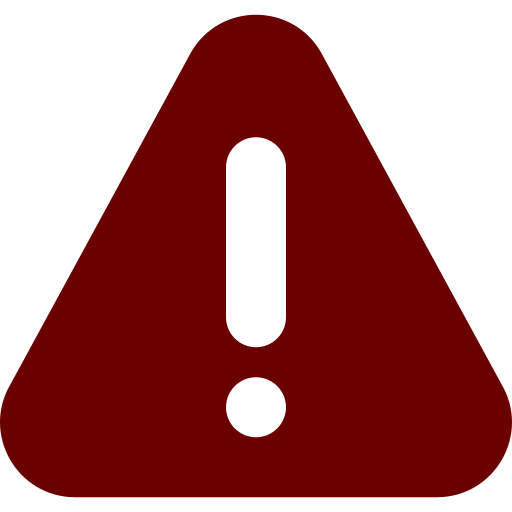

O que é a Busca de Anterioridade?
A busca de anterioridade é um procedimento essencial que consiste em pesquisar no banco de dados do Instituto Nacional da Propriedade Industrial (INPI) se já existe alguma marca idêntica ou semelhante à que você pretende registrar, para produtos ou serviços do mesmo ramo de atividade.
Este passo é crucial para evitar que você invista tempo e recursos em um processo de registro que tem grandes chances de ser negado. Uma busca bem feita pode poupar frustrações e prejuízos futuros.
Benefícios de uma Busca de Anterioridade Completa
Aumenta as Chances de Sucesso
Identifica impedimentos antes do depósito, otimizando seu processo.
Economia de Tempo e Dinheiro
Evita gastos com taxas e honorários em processos com pouca chance de êxito.

Prevenção de Conflitos
Minimiza o risco de litígios e ações judiciais por uso indevido de marca.
Direcionamento Estratégico
Permite ajustar sua estratégia de marca se houver impedimentos.
Segurança para o seu Negócio
Construa sua marca sobre uma base sólida e legalmente protegida.
Como a Nova Marca Realiza sua Busca de Anterioridade
Análise Inicial
Coletamos informações sobre sua marca e o segmento de atuação.
Pesquisa Abrangente
Realizamos uma busca minuciosa no banco de dados do INPI e outras fontes.
Relatório Detalhado
Apresentamos um relatório completo com os resultados e análise de viabilidade.
Perguntas Frequentes sobre Busca de Anterioridade
A busca de anterioridade aumenta significativamente as chances de sucesso, mas não garante o registro. O INPI é o único responsável pela decisão final, e novos pedidos podem surgir após a sua busca.
É altamente recomendável fazer a busca antes de qualquer investimento em identidade visual, marketing ou uso da marca, para evitar retrabalho e prejuízos.
Nossa busca principal é no INPI, mas também consideramos outras fontes relevantes para uma análise mais completa, como registros de domínios e redes sociais.